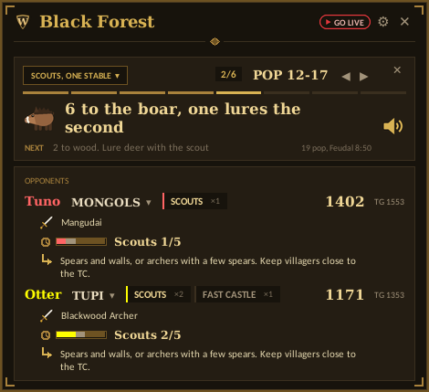

Your build order, on top of the game.
Wingman is a small free overlay for ranked. It reads your pop counter and walks you through the build one step at a time, sizes up your opponent from their public games, and gives you a nudge when your Town Center goes idle.
Hera's builds, one step at a time
Fourteen builds from Hera's strategy guide, cut down to one line per step so you can read them mid game. Each line lands on the pop the villager comes out at, and the Feudal click lands on your last villager.
A wingman, not an autopilot
Everything it shows you is something you could already see. It just puts it where your eyes are.
Knows the map
Sheep, boar and relics for the map you're on, counted off as you find them.
Scouts your opponent
Their rating, how they usually open, when they hit Feudal and Castle, and how to answer it.
Follows your build
Reads the pop counter off your screen and moves the build on as villagers come out.
Nags you, nicely
Idle Town Center, about to be housed, and a reminder to get your two Feudal buildings up.
Knows when it's gone
Fall a long way behind on score and it tells you. It never resigns for you.
Keeps your record
Wins and losses by civ and map, rating game by game, and which maps to ban.
Small, quiet, always on top
It sits in a corner, rolls up when you want it out of the way, and never takes focus from the game.

Two minutes, start to finish
Download
Grab Wingman.exe and put it on your Desktop.
Run it
Double-click. If Windows says it protected your PC, click More info, then Run anyway. The exe isn't signed, that's all.
Play ranked
The small bar opens into the full panel when your match starts. Pick a build from the strip.
Updates are one click from the bar when a new version is out. Prefer Python? The .bat version updates itself from GitHub. Full guide
Not a cheat
It only uses what you can already see: the lobby, your own screen and the public ladder. It never reads the game's memory, never shows you anything hidden, and never moves a unit.